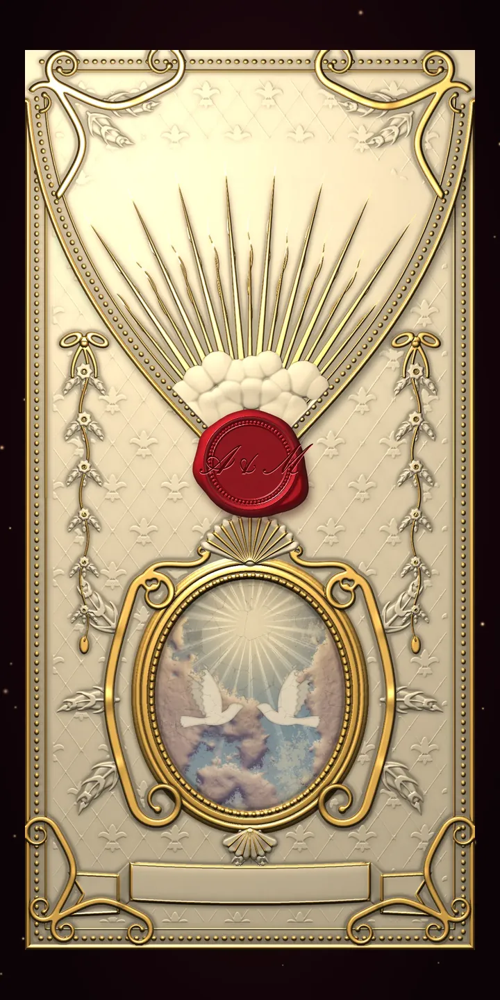

Düğün · Barok
Saray Salonu
Fildişi kağıtta yaldız gloria, alçı bulutlar ve güvercinli fresk. Kanon, klavsenle çalar.
- Kadife perde aralanır, isimler sahneye iner
- Kubbenin freskli göğüne uçuş
- Yaldız çerçeveli tablolarda ilk günler
- Parşömen açılır, mühür basılır
- Altın madalyon ve geri sayım
- Sarmaşık programı, saray çizimi, yol tarifi
- Katılım mektubu ve gül yaprakları